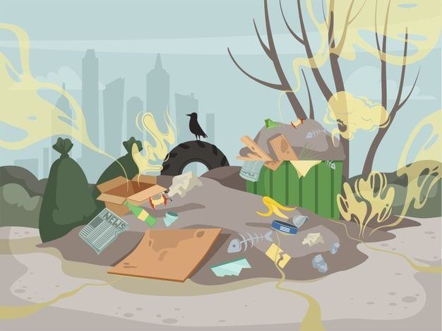

"Welcome to the Recycle Page!"
"Recycle: Transform Waste into Resources"
"Learn how recycling helps preserve our planet and discover how you can contribute."


Tips for Recycling:
-
Understand What Can Be Recycled:
A guide on materials that can and cannot be recycled.
-
Sorting Guide:
Tips for properly sorting recyclables from non-recyclables.
-
Recycling Process:
An infographic or interactive element showing the recycling process from collection to repurposing.
-
Local Recycling Facilities:
Tool to find nearby recycling centers and drop-off points.
"Resource Center for Recycling"
-
Blog:
Latest articles on recycling trends, tips, and innovations.
-
Downloadable Guides:
Free resources and infographics on recycling practices.
-
Video Tutorials:
Educational videos on various aspects of recycling.
Get Involved
Ready to make a difference? Join local recycling programs, volunteer for community clean-up events, and share your recycling efforts on social media. Connect with us to stay updated and find ways to contribute to the recycling movement.